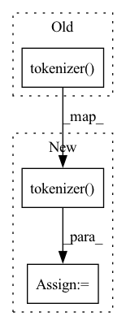

Pattern ID :27842
Before Change
def __getitem__(self, index: int) -> dict[str, torch.Tensor]:
with open(self.filenames[index]) as fp:
return self.tokenizer(
fp.read(),
padding="max_length",
max_length=self.max_length,
truncation=True,
)
After Change
def __getitem__(self, index: int) -> dict[str, torch.Tensor]:
with open(self.filenames[index]) as fp:
encodings = self.tokenizer(
fp.read(),
padding="max_length",
max_length=self.max_length,
truncation=True,
)
// Create label sequence which equals to the input tokens except paddings. We
// will replace the padding tokens to `-100` to prevent from calculating loss.
encodings["labels"] = [In pattern: SUPERPATTERN
Frequency: 6
Non-data size: 3
Instances Fragment ID: 82679391
Project Name: readme-generator/alreadyme-ai-research
Commit Name: b7869a4045981fb3bcd9617711f4619c4e54ad2b
Time: 2022-09-03
Author: affjljoo3581@gmail.com
File Name: model-finetuning/src/data.py
M Class Name: TextFileDataset
N Class Name: TextFileDataset
M Method Name: __getitem__(2)
N Method Name: __getitem__(2)
M Parent Class: Dataset
N Parent Class: Dataset
M File Name: model-finetuning/src/data.py
N File Name: model-finetuning/src/data.py
M Start Line: 21
M End Line: 26
N Start Line: 21
N End Line: 34
Before Change
self.tokenizer = LongformerTokenizer.from_pretrained("allenai/longformer-base-4096")
def summarize(self, corpus, queries=None):
input_ids = self.tokenizer( corpus, return_tensors="pt") .input_ids
output_ids = self.model.generate(input_ids)
return self.tokenizer.decode(output_ids[0], skip_special_tokens=True)After Change
def summarize(self, corpus, queries=None):
// Tokenizes corpus and returns PyTorch torch.Tensor object with length attribute
tokenized_sequence = self.tokenizer( corpus, return_tensors="pt", return_length=True)
print(f"Longformer model: processing document of {tokenized_sequence.length} tokens")
input_ids = tokenized_sequence.input_ids
// output_ids is tensor with one layer: output_ids[0] extracts tensor layer for decoding
output_ids = self.model.generate(input_ids)
Fragment ID: 82679406
Project Name: yale-lily/summertime
Commit Name: c784a0c4de0ed8ff8e1781aa48f3eee51d074b2f
Time: 2021-06-11
Author: troy.feng@yale.edu
File Name: model/longformer_model.py
M Class Name: LongformerModel
N Class Name: LongformerModel
M Method Name: summarize(3)
N Method Name: summarize(3)
M Parent Class: SummModel
N Parent Class: SummModel
M File Name: model/longformer_model.py
N File Name: model/longformer_model.py
M Start Line: 18
M End Line: 18
N Start Line: 19
N End Line: 21
Before Change
def __getitem__(self, index: int) -> dict[str, Any]:
with open(self.filenames[index]) as fp:
return self.tokenizer(
fp.read(),
max_length=self.max_length,
padding="max_length",
truncation=True,
)
After Change
def __getitem__(self, index: int) -> dict[str, Any]:
with open(self.filenames[index]) as fp:
encodings = self.tokenizer(
fp.read(),
max_length=self.max_length,
padding="max_length",
truncation=True,
)
encodings["labels"] = encodings["input_ids"][1:] + [-100]
return encodings
Fragment ID: 82679403
Project Name: readme-generator/alreadyme-ai-research
Commit Name: ae4485fb61557f096ecf23928d8d1dea258fda90
Time: 2022-09-01
Author: affjljoo3581@gmail.com
File Name: model-finetuning/data.py
M Class Name: TextFileDataset
N Class Name: TextFileDataset
M Method Name: __getitem__(2)
N Method Name: __getitem__(2)
M Parent Class: Dataset
N Parent Class: Dataset
M File Name: model-finetuning/data.py
N File Name: model-finetuning/data.py
M Start Line: 21
M End Line: 26
N Start Line: 21
N End Line: 28
Before Change
company = item.get("company")
position = item.get("position")
detail = item.get("detail")
input_ids = self.tokenizer( text, padding="max_length") .get("input_ids")
start_vector, end_vector = [0] * 512, [0] * 512
if company is not None:
company_ids = self.tokenizer(company).get("input_ids")After Change
company = item.get("company")
position = item.get("position")
detail = item.get("detail")
token_results = self.tokenizer( text, padding="max_length")
token_ids = token_results.get("input_ids")
segment_ids = token_results.get("token_type_ids")
attention_mask = token_results.get("attention_mask")
start_vector, end_vector = [0] * 512, [0] * 512 Fragment ID: 82679397
Project Name: stanleylsx/entity_extractor_by_pointer
Commit Name: 64939c1e5a753af75acd67078fcb7296142eeb30
Time: 2020-08-09
Author: gzlishouxian@gmail.com
File Name: entity_extractor/data.py
M Class Name: DataGenerator
N Class Name: DataGenerator
M Method Name: prepare_data(1)
N Method Name: prepare_data(1)
M Parent Class:
N Parent Class:
M File Name: entity_extractor/data.py
N File Name: entity_extractor/data.py
M Start Line: 38
M End Line: 71
N Start Line: 35
N End Line: 80
Before Change
def __getitem__(self, index: int) -> dict[str, Any]:
with open(self.filenames[index]) as fp:
encodings = self.tokenizer(
fp.read(),
max_length=self.max_length,
padding="max_length",
truncation=True,
)
encodings["labels"] = encodings["input_ids"]
return encodings
After Change
def __getitem__(self, index: int) -> dict[str, Any]:
with open(self.filenames[index]) as fp:
text = fp.read()
encodings = self.tokenizer( text, max_length=self.max_length, truncation=True)
encodings["labels"] = encodings["input_ids"]
return encodings
Fragment ID: 82679399
Project Name: readme-generator/alreadyme-ai-research
Commit Name: b9960a125ad631369ea8e950e2214991bd9ed0af
Time: 2022-09-01
Author: affjljoo3581@gmail.com
File Name: model-finetuning/data.py
M Class Name: TextFileDataset
N Class Name: TextFileDataset
M Method Name: __getitem__(2)
N Method Name: __getitem__(2)
M Parent Class: Dataset
N Parent Class: Dataset
M File Name: model-finetuning/data.py
N File Name: model-finetuning/data.py
M Start Line: 21
M End Line: 28
N Start Line: 21
N End Line: 24